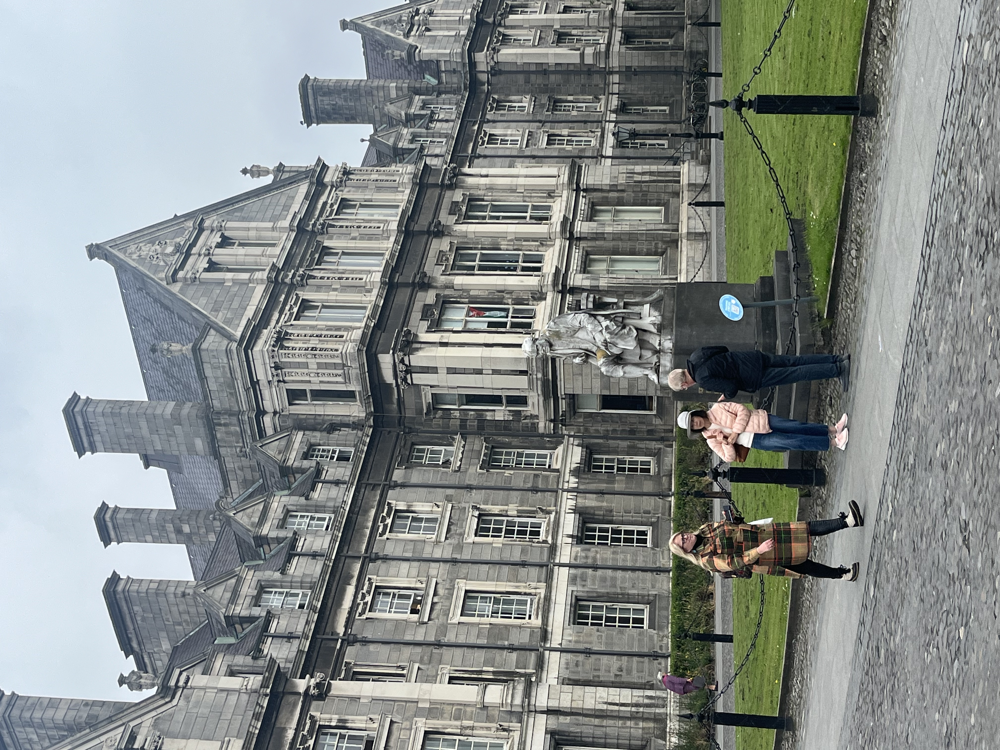

This is a statue of George Salmon. George Salmon was the Provost of Trinity from 1888 until his death in 1904. Provost is the head of a certain university college. There is some drama surrounding this statue because George Salmon was a very bigoted man saying, "Over my dead body will women enter this college" This is a statue of Molly Malone. She is the embodiment of an ancient, tale that originated in Dublin, Ireland, and has become deeply ingrained in Irish culture. According to folklore, Molly was a lovely young woman who worked as a fishmonger before passing away unexpectedly from a fever. According to legend, her ghost started prowling Dublin's streets after she passed away.These bronze statues, shows a starving group of people as well as a dog, marching next to the riverbank.
During the famine known as the "Great Hunger," a significant number of Irish people abandoned Dublin and the rest of Ireland, as depicted by these somber sculptures.The O'Connell Statue is a statue of Daniel O'Connell. Daniel O'Connell also known as 'the Liberator' was the mayor of Dublin. He was acknowledged political leader of Ireland's Roman Catholic majority in the first half of the 19th century. His mobilisation of Catholic Ireland, down to the poorest class of tenant farmers secured the final instalment of Catholic emancipation in 1829 and allowed him to take a seat in the United Kingdom Parliament to which he had been twice elected. Info via wikipedia.